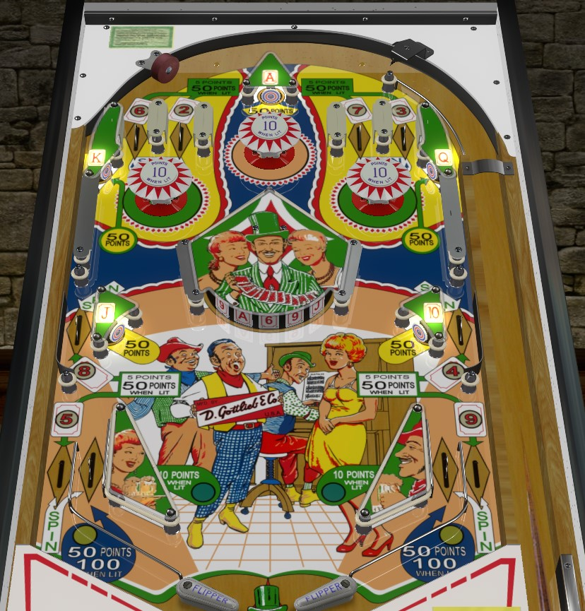

King of Diamonds is the replay version. Diamond Jack and Solitaire are identical add-a-ball versions. This guide focuses primarily on King of Diamonds, with changes seen in the add-a-ball versions mentioned at the end of the guide.
Collect playing cards from rollover lanes or the center drum targets. Any rollover lane spins the drum target. Be mindful of the center drain risk that comes from shooting directly at the middle of the drum. If pop bumpers are lively, shoot to the top corners of the table and try to get a ball to bounce between a pop bumper and a 50-point King or Queen target repeatedly.
The below picture is of Diamond Jack, which was taken from the VPX recreation by Loserman76. The odd angle is intentional so that the faces of the drum target are visible.
Playing cards are collectable around the playfield. Cards 2 through 9 each have their own rollover lane, while cards 10 through Ace each have their own standup target. Standup targets always score 50 points whether lit or not. Rollover lanes score 50 points when lit or 5 points when not lit; roll through a lit lane to unlight it and collect the corresponding card. Collected cards are also shown on the backglass.
Collecting the King, Ace, or Queen lights the left, center, or right pop bumper respectively. Bumpers score 1 point, or 10 points when lit.
The center drum target has 16 faces. At any time, 5 of them are visible, but only 3 can usually be shot. Each face has a playing card value on it. Hitting a face scores the same number of points as if you had made that card's standup target or rollover lane directly: 50 points if it is an Ace through 10 card or if it was a 2 through 9 card that was lit, and 5 points otherwise. Hitting a face corresponding to a lit card will also still collect and unlight that card. Any rollover lane on the table will spin the drum target so that a different set of 5 faces are visible.
At any given time, one of the two slingshots is lit for 10 points instead of 1, and one of the two in lanes is lit for 100 points instead of 50. The lit in lane and slingshot are always on the same side. 1-point switch hits toggle which side has the lit in lane and slingshot.
When all 13 playing cards have been collected, Special is lit for the rest of the game. The lit in lane will now score a Special instead of 100 points, and 1-point switch hits toggle whether the Ace, King, Queen, Jack or 10 target will also score a Special. Just like when the cards were collected initially, target specials can be earned from the playing card standup targets themselves or the corresponding faces of the drum target.
There is no end of ball bonus. No extra balls are available. Special cannot be set to have a point value. Tilt ends game.
On Diamond Jack and Solitaire, there are no playfield specials. Instead, you get 1 extra ball for completing 2-3-4-5, 1 extra ball for completing 6-7-8-9, and 1 extra ball for completing 10-Jack-Queen-King-Ace. Collecting all 13 cards reset the entire sequence, allowing for more extra balls to be collected but also unlighting the table features corresponding to the 10 through Ace cards. Extra balls are also available for reaching the score thresholds shown on the table apron.
Rather than being an alternating feature, the left slingshot and in lane will be lit if the Jack has been collected, and right slingshot and in lane will be lit if the 10 has been collected.
On Diamond Jack, you can keep collecting extra balls until you have 10 balls remaining in the game (including the ball in play). On Solitaire, the ball in play counter still counts up, but it only advances if the ball drains with no extra balls queued, and up to 5 extra balls can be queued at a time, indicated by the diamonds along the bottom of the backglass.
Tilt penalty on the add-a-ball versions of the game is loss of the ball in play plus one additional ball.